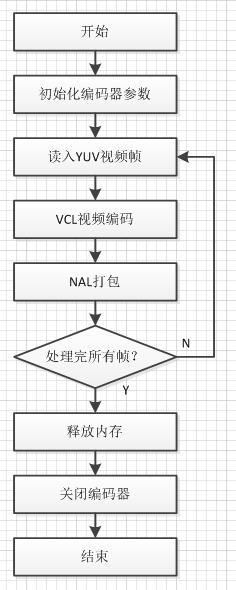

原文连接:https://www.cnblogs.com/xue0708/p/11962210.html
接下来的几篇博客中，具体学习下X264的实现过程。
源代码的分析参考了雷神的博客，感谢雷神！博客链接：https://blog.csdn.net/leixiaohua1020/article/details/45536607。
1.概述
X264编码流程图如下所示：

首先我们要创建编码器，初始化编码器参数，然后读入YUV数据进行VCL视频编码，编码后的数据进行NAL打包，循环所有的视频帧，最后释放内存，关闭编码器。
2.应用工程
（1）main（）函数是x264控制台应用程序的入口，主函数如下：
//主函数
int main( int argc, char **argv )
{
x264_param_t param; //编码器参数
cli_opt_t opt = {0}; //编码器操作
int ret = 0;
FAIL_IF_ERROR( x264_threading_init(), "unable to initialize threading\n" )
#ifdef _WIN32
FAIL_IF_ERROR( !get_argv_utf8( &argc, &argv ), "unable to convert command line to UTF-8\n" )
GetConsoleTitleW( org_console_title, CONSOLE_TITLE_SIZE );
_setmode( _fileno( stdin ), _O_BINARY ); //二进制格式
_setmode( _fileno( stdout ), _O_BINARY );
_setmode( _fileno( stderr ), _O_BINARY );
#endif
if( parse( argc, argv, ¶m, &opt ) < 0 ) //解析命令行输入
ret = -1;
#ifdef _WIN32
SetConsoleTitleW( org_console_title );
#endif
signal( SIGINT, sigint_handler );
if( !ret )
ret = encode( ¶m, &opt ); //编码
if( filter.free )
filter.free( opt.hin );
else if( opt.hin )
cli_input.close_file( opt.hin );
if( opt.hout )
cli_output.close_file( opt.hout, 0, 0 );
if( opt.tcfile_out )
fclose( opt.tcfile_out );
if( opt.qpfile )
fclose( opt.qpfile );
#ifdef _WIN32
SetConsoleTitleW( org_console_title );
free( argv );
#endif
return ret;
}
主函数的开始，首先调用parse（）解析输入的命令行参数，再调用encode（）函数进行编码。
（2）parse（）函数用于解析命令行输入的参数。
static int parse(int argc, char **argv, x264_param_t *param, cli_opt_t *opt)
argc：参数个数；argv：指向参数的指针； param：参数结构体； opt：操作类型；
parse（）函数：
//解析命令行输入
static int parse( int argc, char **argv, x264_param_t *param, cli_opt_t *opt )
{
char *input_filename = NULL;
const char *demuxer = demuxer_names[0];
char *output_filename = NULL;
const char *muxer = muxer_names[0];
char *tcfile_name = NULL;
x264_param_t defaults;
char *profile = NULL;
char *vid_filters = NULL;
int b_thread_input = 0;
int b_turbo = 1;
int b_user_ref = 0;
int b_user_fps = 0;
int b_user_interlaced = 0;
cli_input_opt_t input_opt;
cli_output_opt_t output_opt;
char *preset = NULL;
char *tune = NULL;
//初始化参数默认值
x264_param_default( &defaults );
cli_log_level = defaults.i_log_level;
memset( &input_opt, 0, sizeof(cli_input_opt_t) );
memset( &output_opt, 0, sizeof(cli_output_opt_t) );
input_opt.bit_depth = 8;
input_opt.input_range = input_opt.output_range = param->vui.b_fullrange = RANGE_AUTO;
int output_csp = defaults.i_csp;
opt->b_progress = 1;
/* Presets are applied before all other options. */
for( optind = 0;; )
{
int c = getopt_long( argc, argv, short_options, long_options, NULL );
if( c == -1 )
break;
if( c == OPT_PRESET )
preset = optarg;
if( c == OPT_TUNE )
tune = optarg;
else if( c == '?' )
return -1;
}
if( preset && !strcasecmp( preset, "placebo" ) )
b_turbo = 0;
//设置preset，tune
if( x264_param_default_preset( param, preset, tune ) < 0 )
return -1;
/* Parse command line options */
//解析命令行选项
for( optind = 0;; )
{
int b_error = 0;
int long_options_index = -1;
int c = getopt_long( argc, argv, short_options, long_options, &long_options_index );
if( c == -1 )
{
break;
}
//不同的选项做不同的处理
switch( c )
{
case 'h':
help( &defaults, 0 );//"-h"帮助菜单
exit(0);
case OPT_LONGHELP:
help( &defaults, 1 );
exit(0);
case OPT_FULLHELP:
help( &defaults, 2 );
exit(0);
case 'V':
print_version_info();//打印版本信息
exit(0);
case OPT_FRAMES:
param->i_frame_total = X264_MAX( atoi( optarg ), 0 );
break;
case OPT_SEEK:
opt->i_seek = X264_MAX( atoi( optarg ), 0 );
break;
case 'o':
output_filename = optarg;//输出文件路径
break;
case OPT_MUXER:
FAIL_IF_ERROR( parse_enum_name( optarg, muxer_names, &muxer ), "Unknown muxer `%s'\n", optarg )
break;
case OPT_DEMUXER:
FAIL_IF_ERROR( parse_enum_name( optarg, demuxer_names, &demuxer ), "Unknown demuxer `%s'\n", optarg )
break;
case OPT_INDEX:
input_opt.index_file = optarg;
break;
case OPT_QPFILE:
opt->qpfile = x264_fopen( optarg, "rb" );
FAIL_IF_ERROR( !opt->qpfile, "can't open qpfile `%s'\n", optarg )
if( !x264_is_regular_file( opt->qpfile ) )
{
x264_cli_log( "x264", X264_LOG_ERROR, "qpfile incompatible with non-regular file `%s'\n", optarg );
fclose( opt->qpfile );
return -1;
}
break;
case OPT_THREAD_INPUT:
b_thread_input = 1;
break;
case OPT_QUIET:
cli_log_level = param->i_log_level = X264_LOG_NONE;//设置log级别
break;
case 'v':
cli_log_level = param->i_log_level = X264_LOG_DEBUG;//设置log级别
break;
case OPT_LOG_LEVEL:
if( !parse_enum_value( optarg, log_level_names, &cli_log_level ) )
cli_log_level += X264_LOG_NONE;
else
cli_log_level = atoi( optarg );
param->i_log_level = cli_log_level;//设置log级别
break;
case OPT_NOPROGRESS:
opt->b_progress = 0;
break;
case OPT_TUNE:
case OPT_PRESET:
break;
case OPT_PROFILE:
profile = optarg;
break;
case OPT_SLOWFIRSTPASS:
b_turbo = 0;
break;
case 'r':
b_user_ref = 1;
goto generic_option;
case OPT_FPS:
b_user_fps = 1;
param->b_vfr_input = 0;
goto generic_option;
case OPT_INTERLACED:
b_user_interlaced = 1;
goto generic_option;
case OPT_TCFILE_IN:
tcfile_name = optarg;
break;
case OPT_TCFILE_OUT:
opt->tcfile_out = x264_fopen( optarg, "wb" );
FAIL_IF_ERROR( !opt->tcfile_out, "can't open `%s'\n", optarg )
break;
case OPT_TIMEBASE:
input_opt.timebase = optarg;
break;
case OPT_PULLDOWN:
FAIL_IF_ERROR( parse_enum_value( optarg, pulldown_names, &opt->i_pulldown ), "Unknown pulldown `%s'\n", optarg )
break;
case OPT_VIDEO_FILTER:
vid_filters = optarg;
break;
case OPT_INPUT_FMT:
input_opt.format = optarg;//输入文件格式
break;
case OPT_INPUT_RES:
input_opt.resolution = optarg;//输入分辨率
break;
case OPT_INPUT_CSP:
input_opt.colorspace = optarg;//输入色域
break;
case OPT_INPUT_DEPTH:
input_opt.bit_depth = atoi( optarg );//输入颜色位深
break;
case OPT_DTS_COMPRESSION:
output_opt.use_dts_compress = 1;
break;
case OPT_OUTPUT_CSP:
FAIL_IF_ERROR( parse_enum_value( optarg, output_csp_names, &output_csp ), "Unknown output csp `%s'\n", optarg )
// correct the parsed value to the libx264 csp value
#if X264_CHROMA_FORMAT
static const uint8_t output_csp_fix[] = { X264_CHROMA_FORMAT, X264_CSP_RGB };
#else
static const uint8_t output_csp_fix[] = { X264_CSP_I420, X264_CSP_I422, X264_CSP_I444, X264_CSP_RGB };
#endif
param->i_csp = output_csp = output_csp_fix[output_csp];
break;
case OPT_INPUT_RANGE:
FAIL_IF_ERROR( parse_enum_value( optarg, range_names, &input_opt.input_range ), "Unknown input range `%s'\n", optarg )
input_opt.input_range += RANGE_AUTO;
break;
case OPT_RANGE:
FAIL_IF_ERROR( parse_enum_value( optarg, range_names, ¶m->vui.b_fullrange ), "Unknown range `%s'\n", optarg );
input_opt.output_range = param->vui.b_fullrange += RANGE_AUTO;
break;
default:
generic_option:
{
if( long_options_index < 0 )
{
for( int i = 0; long_options[i].name; i++ )
if( long_options[i].val == c )
{
long_options_index = i;
break;
}
if( long_options_index < 0 )
{
/* getopt_long already printed an error message */
return -1;
}
}
//解析以字符串方式输入的参数
//即选项名称和选项值都是字符串
b_error |= x264_param_parse( param, long_options[long_options_index].name, optarg );
}
}
if( b_error )
{
const char *name = long_options_index > 0 ? long_options[long_options_index].name : argv[optind-2];
x264_cli_log( "x264", X264_LOG_ERROR, "invalid argument: %s = %s\n", name, optarg );
return -1;
}
}
/* If first pass mode is used, apply faster settings. */
if( b_turbo )
x264_param_apply_fastfirstpass( param );
/* Apply profile restrictions. */
//设置profile
if( x264_param_apply_profile( param, profile ) < 0 )
return -1;
/* Get the file name */
FAIL_IF_ERROR( optind > argc - 1 || !output_filename, "No %s file. Run x264 --help for a list of options.\n",
optind > argc - 1 ? "input" : "output" )
//根据文件名的后缀确定输出的文件格式（raw H264，flv，mp4...）
if( select_output( muxer, output_filename, param ) )
return -1;
FAIL_IF_ERROR( cli_output.open_file( output_filename, &opt->hout, &output_opt ), "could not open output file `%s'\n", output_filename )
//输入文件路径
input_filename = argv[optind++];
video_info_t info = {0};
char demuxername[5];
/* set info flags to be overwritten by demuxer as necessary. */
//设置info结构体
info.csp = param->i_csp;
info.fps_num = param->i_fps_num;
info.fps_den = param->i_fps_den;
info.fullrange = input_opt.input_range == RANGE_PC;
info.interlaced = param->b_interlaced;
if( param->vui.i_sar_width > 0 && param->vui.i_sar_height > 0 )
{
info.sar_width = param->vui.i_sar_width;
info.sar_height = param->vui.i_sar_height;
}
info.tff = param->b_tff;
info.vfr = param->b_vfr_input;
input_opt.seek = opt->i_seek;
input_opt.progress = opt->b_progress;
input_opt.output_csp = output_csp;
//设置输入文件的格式（yuv，y4m...）
if( select_input( demuxer, demuxername, input_filename, &opt->hin, &info, &input_opt ) )
return -1;
FAIL_IF_ERROR( !opt->hin && cli_input.open_file( input_filename, &opt->hin, &info, &input_opt ),
"could not open input file `%s'\n", input_filename )
x264_reduce_fraction( &info.sar_width, &info.sar_height );
x264_reduce_fraction( &info.fps_num, &info.fps_den );
x264_cli_log( demuxername, X264_LOG_INFO, "%dx%d%c %u:%u @ %u/%u fps (%cfr)\n", info.width,
info.height, info.interlaced ? 'i' : 'p', info.sar_width, info.sar_height,
info.fps_num, info.fps_den, info.vfr ? 'v' : 'c' );
if( tcfile_name )
{
FAIL_IF_ERROR( b_user_fps, "--fps + --tcfile-in is incompatible.\n" )
FAIL_IF_ERROR( timecode_input.open_file( tcfile_name, &opt->hin, &info, &input_opt ), "timecode input failed\n" )
cli_input = timecode_input;
}
else FAIL_IF_ERROR( !info.vfr && input_opt.timebase, "--timebase is incompatible with cfr input\n" )
/* init threaded input while the information about the input video is unaltered by filtering */
#if HAVE_THREAD
if( info.thread_safe && (b_thread_input || param->i_threads > 1
|| (param->i_threads == X264_THREADS_AUTO && x264_cpu_num_processors() > 1)) )
{
if( thread_input.open_file( NULL, &opt->hin, &info, NULL ) )
{
fprintf( stderr, "x264 [error]: threaded input failed\n" );
return -1;
}
cli_input = thread_input;
}
#endif
/* override detected values by those specified by the user */
if( param->vui.i_sar_width > 0 && param->vui.i_sar_height > 0 )
{
info.sar_width = param->vui.i_sar_width;
info.sar_height = param->vui.i_sar_height;
}
if( b_user_fps )
{
info.fps_num = param->i_fps_num;
info.fps_den = param->i_fps_den;
}
if( !info.vfr )
{
info.timebase_num = info.fps_den;
info.timebase_den = info.fps_num;
}
if( !tcfile_name && input_opt.timebase )
{
uint64_t i_user_timebase_num;
uint64_t i_user_timebase_den;
int ret = sscanf( input_opt.timebase, "%"SCNu64"/%"SCNu64, &i_user_timebase_num, &i_user_timebase_den );
FAIL_IF_ERROR( !ret, "invalid argument: timebase = %s\n", input_opt.timebase )
else if( ret == 1 )
{
i_user_timebase_num = info.timebase_num;
i_user_timebase_den = strtoul( input_opt.timebase, NULL, 10 );
}
FAIL_IF_ERROR( i_user_timebase_num > UINT32_MAX || i_user_timebase_den > UINT32_MAX,
"timebase you specified exceeds H.264 maximum\n" )
opt->timebase_convert_multiplier = ((double)i_user_timebase_den / info.timebase_den)
* ((double)info.timebase_num / i_user_timebase_num);
info.timebase_num = i_user_timebase_num;
info.timebase_den = i_user_timebase_den;
info.vfr = 1;
}
if( b_user_interlaced )
{
info.interlaced = param->b_interlaced;
info.tff = param->b_tff;
}
if( input_opt.input_range != RANGE_AUTO )
info.fullrange = input_opt.input_range;
//初始化滤镜filter
//filter可以认为是一种“扩展”了的输入源
if( init_vid_filters( vid_filters, &opt->hin, &info, param, output_csp ) )
return -1;
/* set param flags from the post-filtered video */
param->b_vfr_input = info.vfr;
param->i_fps_num = info.fps_num;
param->i_fps_den = info.fps_den;
param->i_timebase_num = info.timebase_num;
param->i_timebase_den = info.timebase_den;
param->vui.i_sar_width = info.sar_width;
param->vui.i_sar_height = info.sar_height;
info.num_frames = X264_MAX( info.num_frames - opt->i_seek, 0 );
if( (!info.num_frames || param->i_frame_total < info.num_frames)
&& param->i_frame_total > 0 )
info.num_frames = param->i_frame_total;
param->i_frame_total = info.num_frames;
if( !b_user_interlaced && info.interlaced )
{
#if HAVE_INTERLACED
x264_cli_log( "x264", X264_LOG_WARNING, "input appears to be interlaced, enabling %cff interlaced mode.\n"
" If you want otherwise, use --no-interlaced or --%cff\n",
info.tff ? 't' : 'b', info.tff ? 'b' : 't' );
param->b_interlaced = 1;
param->b_tff = !!info.tff;
#else
x264_cli_log( "x264", X264_LOG_WARNING, "input appears to be interlaced, but not compiled with interlaced support\n" );
#endif
}
/* if the user never specified the output range and the input is now rgb, default it to pc */
int csp = param->i_csp & X264_CSP_MASK;
if( csp >= X264_CSP_BGR && csp <= X264_CSP_RGB )
{
if( input_opt.output_range == RANGE_AUTO )
param->vui.b_fullrange = RANGE_PC;
/* otherwise fail if they specified tv */
FAIL_IF_ERROR( !param->vui.b_fullrange, "RGB must be PC range" )
}
/* Automatically reduce reference frame count to match the user's target level
* if the user didn't explicitly set a reference frame count. */
if( !b_user_ref )
{
int mbs = (((param->i_width)+15)>>4) * (((param->i_height)+15)>>4);
for( int i = 0; x264_levels[i].level_idc != 0; i++ )
if( param->i_level_idc == x264_levels[i].level_idc )
{
while( mbs * param->i_frame_reference > x264_levels[i].dpb && param->i_frame_reference > 1 )
param->i_frame_reference--;
break;
}
}
return 0;
}
（1）调用x264_param_default（）为存参数的结构体x264_param_t赋默认值；
（2）调用x264_param_default_preset（）为x264_param_t赋值；
（3）在循环中调用getopt_long（）逐个解析输入的参数，并做相应的处理；
（4）调用select_input（）解析输出文件格式；
（5）调用select_output（）解析输入文件格式；
x264_param_default（）：设置x264_param_t结构体的默认值（X264的API）。
void x264_param_default(x264_param_t *param)
{
memset( param, 0, sizeof( x264_param_t ) ); //开辟内存空间
param->cpu = x264_cpu_detect(); //CPU自动检测
param->i_threads = X264_THREADS_AUTO; //并行编码线程为0
param->b_deterministic = 1; //允许非确定性时线程优化
param->i_sync_lookahead = X264_SYNC_LOOKAHEAD_AUTO; //自动选择线程超前缓冲大小-1
//视频属性
param->i_csp = X264_CSP_I420; //设置输入的视频采样的格式0x0001yuv 4:2:0 planar
param->i_width = 0; //宽度
param->i_height = 0; //高度
param->vui.i_sar_width = 0;
param->vui.i_sar_height= 0; //设置长宽比
param->vui.i_overscan = 0; //过扫描线，默认undef(不设置)，可选：show(观看)crop(去除)
param->vui.i_vidformat = 5; //undef视频格式
param->vui.b_fullrange = 0; //off
param->vui.i_colorprim = 2; //undef原始色度格式
param->vui.i_transfer = 2; //undef 转换方式
param->vui.i_colmatrix = 2; //undef 色度矩阵设置
param->vui.i_chroma_loc= 0; //left center 色度样本指定，范围0~5，默认0
param->i_fps_num = 25; //帧率
param->i_fps_den = 1; //用两个整型的数的比值，来表示帧率
param->i_level_idc = -1; //level值的设置
param->i_slice_max_size = 0; //每片字节的最大数，包括预计的NAL开销.
param->i_slice_max_mbs = 0; //每片宏块的最大数，重写 i_slice_count
param->i_slice_count = 0; //每帧的像条数目: 设置矩形像条.
//编码参数
param->i_frame_reference = 3; //参考帧的最大帧数。
param->i_keyint_max = 250; //在此间隔设置IDR关键帧
param->i_keyint_min = 25; //场景切换少于次值编码位I, 而不是 IDR.
param->i_bframe = 3; //两个参考帧之间的B帧数目
param->i_scenecut_threshold = 40; //如何积极地插入额外的I帧
param->i_bframe_adaptive = X264_B_ADAPT_FAST; //自适应B帧判定1
param->i_bframe_bias = 0; //控制插入B帧判定，范围-100~+100，越高越容易插入B帧
param->b_bframe_pyramid = 0; //允许部分B为参考帧
param->b_deblocking_filter = 1; //去块效应相关
param->i_deblocking_filter_alphac0 = 0; //[-6, 6] -6 亮度滤波器, 6 强
param->i_deblocking_filter_beta = 0; //[-6, 6] 同上
param->b_cabac = 1; //cabac的开关
param->i_cabac_init_idc = 0;
//码率控制
param->rc.i_rc_method = X264_RC_CRF; //恒定码率
param->rc.i_bitrate = 0; //设置平均码率大小
param->rc.f_rate_tolerance = 1.0;
param->rc.i_vbv_max_bitrate = 0; //平均码率模式下，最大瞬时码率，默认0(与-B设置相同)
param->rc.i_vbv_buffer_size = 0; //码率控制缓冲区的大小，单位kbit，默认0
param->rc.f_vbv_buffer_init = 0.9;
param->rc.i_qp_constant = 23; //最小qp值
param->rc.f_rf_constant = 23;
param->rc.i_qp_min = 10; //允许的最小量化值
param->rc.i_qp_max = 51; //允许的最大量化值
param->rc.i_qp_step = 4; //帧间最大量化步长
param->rc.f_ip_factor = 1.4;
param->rc.f_pb_factor = 1.3;
param->rc.i_aq_mode = X264_AQ_VARIANCE;
param->rc.f_aq_strength = 1.0;
param->rc.i_lookahead = 40;
param->rc.b_stat_write = 0;
param->rc.psz_stat_out = "x264_2pass.log";
param->rc.b_stat_read = 0;
param->rc.psz_stat_in = "x264_2pass.log";
param->rc.f_qcompress = 0.6;
param->rc.f_qblur = 0.5; //时间上模糊量化
param->rc.f_complexity_blur = 20; //时间上模糊复杂性
param->rc.i_zones = 0;
param->rc.b_mb_tree = 1;
//日志
param->pf_log = x264_log_default;
param->p_log_private = NULL;
param->i_log_level = X264_LOG_INFO; //默认为“Info”
//分析
param->analyse.intra = X264_ANALYSE_I4x4 | X264_ANALYSE_I8x8;
param->analyse.inter = X264_ANALYSE_I4x4 | X264_ANALYSE_I8x8 | X264_ANALYSE_PSUB16x16 | X264_ANALYSE_BSUB16x16;
param->analyse.i_direct_mv_pred = X264_DIRECT_PRED_SPATIAL;//空间预测模式
param->analyse.i_me_method = X264_ME_HEX; //运动估计算法HEX
param->analyse.f_psy_rd = 1.0;
param->analyse.b_psy = 1;
param->analyse.f_psy_trellis = 0;
param->analyse.i_me_range = 16; //运动估计范围
param->analyse.i_subpel_refine = 7; //亚像素运动估计质量
param->analyse.b_mixed_references = 1; //允许每个宏块的分区在P帧有它自己的参考号
param->analyse.b_chroma_me = 1; //亚像素色度运动估计和P帧的模式选择
param->analyse.i_mv_range_thread = -1; //线程之间的最小空间
param->analyse.i_mv_range = -1; //运动矢量最大长度set from level_idc
param->analyse.i_chroma_qp_offset = 0; //色度量化步长偏移量
param->analyse.b_fast_pskip = 1; //快速P帧跳过检测
param->analyse.b_weighted_bipred = 1; //为b帧隐式加权
param->analyse.b_dct_decimate = 1; //在P-frames转换参数域
param->analyse.b_transform_8x8 = 1; //帧间分区
param->analyse.i_trellis = 1; //Trellis量化，对每个8x8的块寻找合适的量化值，需要CABAC，默认0
param->analyse.i_luma_deadzone[0] = 21; //帧间亮度量化中使用的无效区大小
param->analyse.i_luma_deadzone[1] = 11; //帧内亮度量化中使用的无效区大小
param->analyse.b_psnr = 0; //是否显示PSNR
param->analyse.b_ssim = 0; //是否显示SSIM
//量化
param->i_cqm_preset = X264_CQM_FLAT; //自定义量化矩阵(CQM),初始化量化模式为flat 0
memset( param->cqm_4iy, 16, 16 );
memset( param->cqm_4ic, 16, 16 );
memset( param->cqm_4py, 16, 16 );
memset( param->cqm_4pc, 16, 16 );
memset( param->cqm_8iy, 16, 64 );
memset( param->cqm_8py, 16, 64 ); //开辟空间
param->b_repeat_headers = 1; //在每个关键帧前放置SPS/PPS
param->b_aud = 0; //生成访问单元分隔符
}
x264_param_default_preset（）：设置x264的preset和tune（libx264的API）。
//设置preset，tune
int x264_param_default_preset( x264_param_t *param, const char *preset, const char *tune )
{
x264_param_default( param );
//设置preset
if( preset && x264_param_apply_preset( param, preset ) < 0 )
return -1;
//设置tune
if( tune && x264_param_apply_tune( param, tune ) < 0 )
return -1;
return 0;
}
在代码里，调用了函数x264_param_apply_preset（）和x264_param_apply_tune（）分别设置preset和tune。
x264_param_apply_preset（）：
//设置preset
static int x264_param_apply_preset( x264_param_t *param, const char *preset )
{
char *end;
int i = strtol( preset, &end, 10 );
if( *end == 0 && i >= 0 && i < sizeof(x264_preset_names)/sizeof(*x264_preset_names)-1 )
preset = x264_preset_names[i];
//几种不同的preset设置不同的参数
if( !strcasecmp( preset, "ultrafast" ) )
{
param->i_frame_reference = 1; //参考帧的最大帧数设为1
param->i_scenecut_threshold = 0;
param->b_deblocking_filter = 0; //不使用去块滤波
param->b_cabac = 0; //不使用CABAC
param->i_bframe = 0; //不使用B帧
param->analyse.intra = 0;
param->analyse.inter = 0;
param->analyse.b_transform_8x8 = 0; //不使用8x8DCT
param->analyse.i_me_method = X264_ME_DIA;//运动算法的选择，使用“Diamond”
param->analyse.i_subpel_refine = 0;
param->rc.i_aq_mode = 0;
param->analyse.b_mixed_references = 0;
param->analyse.i_trellis = 0;
param->i_bframe_adaptive = X264_B_ADAPT_NONE;
param->rc.b_mb_tree = 0;
param->analyse.i_weighted_pred = X264_WEIGHTP_NONE;//不使用加权
param->analyse.b_weighted_bipred = 0;
param->rc.i_lookahead = 0;
}
else if( !strcasecmp( preset, "superfast" ) )
{
param->analyse.inter = X264_ANALYSE_I8x8|X264_ANALYSE_I4x4;
param->analyse.i_me_method = X264_ME_DIA; //钻石模板
param->analyse.i_subpel_refine = 1; //亚像素运动估计质量为1
param->i_frame_reference = 1; //参考帧最大帧数为1
param->analyse.b_mixed_references = 0;
param->analyse.i_trellis = 0;
param->rc.b_mb_tree = 0;
param->analyse.i_weighted_pred = X264_WEIGHTP_SIMPLE;
param->rc.i_lookahead = 0;
}
else if( !strcasecmp( preset, "veryfast" ) )
{
param->analyse.i_me_method = X264_ME_HEX; //六边形模板
param->analyse.i_subpel_refine = 2;
param->i_frame_reference = 1;
param->analyse.b_mixed_references = 0;
param->analyse.i_trellis = 0;
param->analyse.i_weighted_pred = X264_WEIGHTP_SIMPLE;
param->rc.i_lookahead = 10;
}
else if( !strcasecmp( preset, "faster" ) )
{
param->analyse.b_mixed_references = 0;
param->i_frame_reference = 2; //参考帧最大帧数设为2
param->analyse.i_subpel_refine = 4;
param->analyse.i_weighted_pred = X264_WEIGHTP_SIMPLE;
param->rc.i_lookahead = 20;
}
else if( !strcasecmp( preset, "fast" ) )
{
param->i_frame_reference = 2;
param->analyse.i_subpel_refine = 6;
param->analyse.i_weighted_pred = X264_WEIGHTP_SIMPLE;
param->rc.i_lookahead = 30;
}
else if( !strcasecmp( preset, "medium" ) )
{
/* Default is medium */
}
else if( !strcasecmp( preset, "slow" ) )
{
param->analyse.i_me_method = X264_ME_UMH; //UMH相对复杂
param->analyse.i_subpel_refine = 8; //亚像素运动估计质量为8
param->i_frame_reference = 5; //参考帧的组大帧数设为5
param->i_bframe_adaptive = X264_B_ADAPT_TRELLIS;
param->analyse.i_direct_mv_pred = X264_DIRECT_PRED_AUTO;
param->rc.i_lookahead = 50;
}
else if( !strcasecmp( preset, "slower" ) )
{
param->analyse.i_me_method = X264_ME_UMH;
param->analyse.i_subpel_refine = 9;
param->i_frame_reference = 8; //参考帧的最大帧数设为8
param->i_bframe_adaptive = X264_B_ADAPT_TRELLIS;
param->analyse.i_direct_mv_pred = X264_DIRECT_PRED_AUTO;
param->analyse.inter |= X264_ANALYSE_PSUB8x8;
param->analyse.i_trellis = 2;
param->rc.i_lookahead = 60;
}
else if( !strcasecmp( preset, "veryslow" ) )
{
param->analyse.i_me_method = X264_ME_UMH;
param->analyse.i_subpel_refine = 10;
param->analyse.i_me_range = 24;
param->i_frame_reference = 16;
param->i_bframe_adaptive = X264_B_ADAPT_TRELLIS;
param->analyse.i_direct_mv_pred = X264_DIRECT_PRED_AUTO;
param->analyse.inter |= X264_ANALYSE_PSUB8x8;
param->analyse.i_trellis = 2;
param->i_bframe = 8; //两个参考帧之间B帧为8
param->rc.i_lookahead = 60;
}
else if( !strcasecmp( preset, "placebo" ) )
{
param->analyse.i_me_method = X264_ME_TESA; //TESA很慢
param->analyse.i_subpel_refine = 11;
param->analyse.i_me_range = 24; //运动估计范围设为24
param->i_frame_reference = 16; //参考帧的最大帧数设为16
param->i_bframe_adaptive = X264_B_ADAPT_TRELLIS;
param->analyse.i_direct_mv_pred = X264_DIRECT_PRED_AUTO;
param->analyse.inter |= X264_ANALYSE_PSUB8x8;
param->analyse.b_fast_pskip = 0;
param->analyse.i_trellis = 2;
param->i_bframe = 16; //两个参考帧之间B帧为16
param->rc.i_lookahead = 60;
}
else
{
x264_log( NULL, X264_LOG_ERROR, "invalid preset '%s'\n", preset );
return -1;
}
return 0;
}
通过调节preset参数可以调整编码速度和质量之间的平衡。它的具体参数有ultrafast、superfast、veryfast、faster、fast、medium、slow、slower、placebo。这些参数的编码速度从快到慢，默认值是medium。
x264_param_apply_tune（）：
//设置tune
static int x264_param_apply_tune( x264_param_t *param, const char *tune )
{
char *tmp = x264_malloc( strlen( tune ) + 1 );
if( !tmp )
return -1;
tmp = strcpy( tmp, tune );
//分解一个字符串为一个字符串数组。第2个参数为分隔符
char *s = strtok( tmp, ",./-+" );
int psy_tuning_used = 0;
//设置
//这里是循环的，可以设置多次
while( s )
{
if( !strncasecmp( s, "film", 4 ) )
{
if( psy_tuning_used++ ) goto psy_failure;
param->i_deblocking_filter_alphac0 = -1;
param->i_deblocking_filter_beta = -1;
param->analyse.f_psy_trellis = 0.15;
}
else if( !strncasecmp( s, "animation", 9 ) )
{
if( psy_tuning_used++ ) goto psy_failure;
param->i_frame_reference = param->i_frame_reference > 1 ? param->i_frame_reference*2 : 1;
param->i_deblocking_filter_alphac0 = 1;
param->i_deblocking_filter_beta = 1;
param->analyse.f_psy_rd = 0.4;
param->rc.f_aq_strength = 0.6;
param->i_bframe += 2;
}
else if( !strncasecmp( s, "grain", 5 ) )
{
if( psy_tuning_used++ ) goto psy_failure;
param->i_deblocking_filter_alphac0 = -2;
param->i_deblocking_filter_beta = -2;
param->analyse.f_psy_trellis = 0.25;
param->analyse.b_dct_decimate = 0;
param->rc.f_pb_factor = 1.1;
param->rc.f_ip_factor = 1.1;
param->rc.f_aq_strength = 0.5;
param->analyse.i_luma_deadzone[0] = 6;
param->analyse.i_luma_deadzone[1] = 6;
param->rc.f_qcompress = 0.8;
}
else if( !strncasecmp( s, "stillimage", 10 ) )
{
if( psy_tuning_used++ ) goto psy_failure;
param->i_deblocking_filter_alphac0 = -3;
param->i_deblocking_filter_beta = -3;
param->analyse.f_psy_rd = 2.0;
param->analyse.f_psy_trellis = 0.7;
param->rc.f_aq_strength = 1.2;
}
else if( !strncasecmp( s, "psnr", 4 ) )
{
if( psy_tuning_used++ ) goto psy_failure;
param->rc.i_aq_mode = X264_AQ_NONE;
param->analyse.b_psy = 0;
}
else if( !strncasecmp( s, "ssim", 4 ) )
{
if( psy_tuning_used++ ) goto psy_failure;
param->rc.i_aq_mode = X264_AQ_AUTOVARIANCE;
param->analyse.b_psy = 0;
}
else if( !strncasecmp( s, "fastdecode", 10 ) )
{
param->b_deblocking_filter = 0;
param->b_cabac = 0;
param->analyse.b_weighted_bipred = 0;
param->analyse.i_weighted_pred = X264_WEIGHTP_NONE;
}
else if( !strncasecmp( s, "zerolatency", 11 ) )
{
//zerolatency速度快
param->rc.i_lookahead = 0;
param->i_sync_lookahead = 0;
param->i_bframe = 0; //不使用B帧
param->b_sliced_threads = 1;
param->b_vfr_input = 0;
param->rc.b_mb_tree = 0;
}
else if( !strncasecmp( s, "touhou", 6 ) )
{
if( psy_tuning_used++ ) goto psy_failure;
param->i_frame_reference = param->i_frame_reference > 1 ? param->i_frame_reference*2 : 1;
param->i_deblocking_filter_alphac0 = -1;
param->i_deblocking_filter_beta = -1;
param->analyse.f_psy_trellis = 0.2;
param->rc.f_aq_strength = 1.3;
if( param->analyse.inter & X264_ANALYSE_PSUB16x16 )
param->analyse.inter |= X264_ANALYSE_PSUB8x8;
}
else
{
x264_log( NULL, X264_LOG_ERROR, "invalid tune '%s'\n", s );
x264_free( tmp );
return -1;
}
if( 0 )
{
psy_failure:
x264_log( NULL, X264_LOG_WARNING, "only 1 psy tuning can be used: ignoring tune %s\n", s );
}
s = strtok( NULL, ",./-+" );
}
x264_free( tmp );
return 0;
}
tune的参数值有：
film：电影、真人类型；
animation：动画；
grain：需要保留大量的颗粒时使用；
stillimage：静态图像编码时使用；
psnr：为提高峰值信噪比（psnr）做优化的参数；
ssim：为提高ssim做优化的参数（ssim：衡量两图图像相似度的指标，值越大越好，最大为1）；
fastdecode：可以快速解码的参数；
zerolatency：零延迟，可以减少音视频的不同步；
x264_param_apply_profile（）：设置x264的profile（x264的API）。
//设置profile
int x264_param_apply_profile( x264_param_t *param, const char *profile )
{
if( !profile )
return 0;
//字符串到整型
int p = profile_string_to_int( profile );
//检查profile设置是否正确
if( p < 0 )
{
x264_log( NULL, X264_LOG_ERROR, "invalid profile: %s\n", profile );
return -1;
}
if( p < PROFILE_HIGH444_PREDICTIVE && ((param->rc.i_rc_method == X264_RC_CQP && param->rc.i_qp_constant <= 0) ||
(param->rc.i_rc_method == X264_RC_CRF && (int)(param->rc.f_rf_constant + QP_BD_OFFSET) <= 0)) )
{
x264_log( NULL, X264_LOG_ERROR, "%s profile doesn't support lossless\n", profile );
return -1;
}
if( p < PROFILE_HIGH444_PREDICTIVE && (param->i_csp & X264_CSP_MASK) >= X264_CSP_I444 )
{
x264_log( NULL, X264_LOG_ERROR, "%s profile doesn't support 4:4:4\n", profile );
return -1;
}
if( p < PROFILE_HIGH422 && (param->i_csp & X264_CSP_MASK) >= X264_CSP_I422 )
{
x264_log( NULL, X264_LOG_ERROR, "%s profile doesn't support 4:2:2\n", profile );
return -1;
}
if( p < PROFILE_HIGH10 && BIT_DEPTH > 8 )
{
x264_log( NULL, X264_LOG_ERROR, "%s profile doesn't support a bit depth of %d\n", profile, BIT_DEPTH );
return -1;
}
//根据不同的Profile做设置
//Baseline基本型
if( p == PROFILE_BASELINE )
{
//不支持DCT8x8
param->analyse.b_transform_8x8 = 0;
//不使用CABAC
param->b_cabac = 0;
param->i_cqm_preset = X264_CQM_FLAT;
param->psz_cqm_file = NULL;
//没有B帧
param->i_bframe = 0;
//没有加权
param->analyse.i_weighted_pred = X264_WEIGHTP_NONE;
//不支持隔行扫描
if( param->b_interlaced )
{
x264_log( NULL, X264_LOG_ERROR, "baseline profile doesn't support interlacing\n" );
return -1;
}
if( param->b_fake_interlaced )
{
x264_log( NULL, X264_LOG_ERROR, "baseline profile doesn't support fake interlacing\n" );
return -1;
}
}
//Main主型
else if( p == PROFILE_MAIN )
{
//不支持DCT8x8
param->analyse.b_transform_8x8 = 0;
param->i_cqm_preset = X264_CQM_FLAT;
param->psz_cqm_file = NULL;
}
return 0;
}
其函数内部调用profile_string_to_int（）：
static int profile_string_to_int( const char *str )
{
if( !strcasecmp( str, "baseline" ) )
return PROFILE_BASELINE;
if( !strcasecmp( str, "main" ) )
return PROFILE_MAIN;
if( !strcasecmp( str, "high" ) )
return PROFILE_HIGH;
if( !strcasecmp( str, "high10" ) )
return PROFILE_HIGH10;
if( !strcasecmp( str, "high422" ) )
return PROFILE_HIGH422;
if( !strcasecmp( str, "high444" ) )
return PROFILE_HIGH444_PREDICTIVE;
return -1;
}
（3）最后根据设定的编码器参数，对输入的视频文件进行H264视频算法编码，编码后的H264码流写入文件。
encode（）函数：编码YUV为H264，源代码如下：
static int encode( x264_param_t *param, cli_opt_t *opt ) //编码器（内部有循环用于一帧一帧编码）
{
x264_t *h = NULL; //编码器句柄
x264_picture_t pic; //当前的编码帧
cli_pic_t cli_pic;
const cli_pulldown_t *pulldown = NULL;
int i_frame = 0; //编码帧数目统计
int i_frame_output = 0;
int64_t i_end, i_previous = 0, i_start = 0; //编码时间统计
int64_t i_file = 0; //当前NAL打包的长度
int i_frame_size; //编码后的码流长度
int64_t last_dts = 0;
int64_t prev_dts = 0;
int64_t first_dts = 0;
int pts_warning_cnt = 0;
int64_t largest_pts = -1;
int64_t second_largest_pts = -1;
int64_t ticks_per_frame;
double duration;
double pulldown_pts = 0;
int retval = 0;
opt->b_progress &= param->i_log_level < X264_LOG_DEBUG; //调试信息等级
if( opt->i_pulldown && !param->b_vfr_input )
{
param->b_pulldown = 1;
param->b_pic_struct = 1;
pulldown = &pulldown_values[opt->i_pulldown];
param->i_timebase_num = param->i_fps_den;
FAIL_IF_ERROR2( fmod( param->i_fps_num * pulldown->fps_factor, 1 ), "unsupported framerate for chosen pulldown\n" )
param->i_timebase_den = param->i_fps_num * pulldown->fps_factor;
}
h = x264_encoder_open( param ); //打开编码器
FAIL_IF_ERROR2( !h, "x264_encoder_open failed\n" );
x264_encoder_parameters( h, param ); //获得参数
FAIL_IF_ERROR2( cli_output.set_param( opt->hout, param ), "can't set outfile param\n" );
i_start = x264_mdate(); //计时，读取当前系统时间
ticks_per_frame = (int64_t)param->i_timebase_den * param->i_fps_den / param->i_timebase_num / param->i_fps_num;
FAIL_IF_ERROR2( ticks_per_frame < 1 && !param->b_vfr_input, "ticks_per_frame invalid: %"PRId64"\n",ticks_per_frame )
ticks_per_frame = X264_MAX( ticks_per_frame, 1 );
//如果不是在每个keyframe前面都增加SPS/PPS/SEI的话，就在整个码流前面加SPS/PPS/SEI；Header指的就是SPS/PPS/SEI
if( !param->b_repeat_headers )
{
x264_nal_t *headers;
int i_nal;
FAIL_IF_ERROR2( x264_encoder_headers( h, &headers, &i_nal ) < 0, "x264_encoder_headers failed\n" )
FAIL_IF_ERROR2( (i_file = cli_output.write_headers( opt->hout, headers )) < 0, "error writing headers to output file\n" );
}
if( opt->tcfile_out )
fprintf( opt->tcfile_out, "# timecode format v2\n" );
for( ; !b_ctrl_c && (i_frame < param->i_frame_total || !param->i_frame_total); i_frame++ ) //循环编码所有帧
{
if( filter.get_frame( opt->hin, &cli_pic, i_frame + opt->i_seek ) ) //获取1帧YUV数据，存于cli_pic
break;
x264_picture_init( &pic ); //初始化x264_picture_t结构体pic
convert_cli_to_lib_pic( &pic, &cli_pic );
if( !param->b_vfr_input )
pic.i_pts = i_frame;
if( opt->i_pulldown && !param->b_vfr_input )
{
pic.i_pic_struct = pulldown->pattern[ i_frame % pulldown->mod ];
pic.i_pts = (int64_t)( pulldown_pts + 0.5 );
pulldown_pts += pulldown_frame_duration[pic.i_pic_struct];
}
else if( opt->timebase_convert_multiplier )
pic.i_pts = (int64_t)( pic.i_pts * opt->timebase_convert_multiplier + 0.5 );
if( pic.i_pts <= largest_pts )
{
if( cli_log_level >= X264_LOG_DEBUG || pts_warning_cnt < MAX_PTS_WARNING )
x264_cli_log( "x264", X264_LOG_WARNING, "non-strictly-monotonic pts at frame %d (%"PRId64" <= %"PRId64")\n",i_frame, pic.i_pts, largest_pts );
else if( pts_warning_cnt == MAX_PTS_WARNING )
x264_cli_log( "x264", X264_LOG_WARNING, "too many nonmonotonic pts warnings, suppressing further ones\n" );
pts_warning_cnt++;
pic.i_pts = largest_pts + ticks_per_frame;
}
second_largest_pts = largest_pts;
largest_pts = pic.i_pts;
if( opt->tcfile_out )
fprintf( opt->tcfile_out, "%.6f\n", pic.i_pts * ((double)param->i_timebase_num / param->i_timebase_den) * 1e3 );
if( opt->qpfile )
parse_qpfile( opt, &pic, i_frame + opt->i_seek );
prev_dts = last_dts;
i_frame_size = encode_frame( h, opt->hout, &pic, &last_dts ); //编码pic中存储的1帧YUV数据
if( i_frame_size < 0 )
{
b_ctrl_c = 1; /* lie to exit the loop */
retval = -1;
}
else if( i_frame_size )
{
i_file += i_frame_size;
i_frame_output++;
if( i_frame_output == 1 )
first_dts = prev_dts = last_dts;
}
if( filter.release_frame( opt->hin, &cli_pic, i_frame + opt->i_seek ) ) //释放处理完的YUV数据
break;
if( opt->b_progress && i_frame_output )
i_previous = print_status( i_start, i_previous, i_frame_output, param->i_frame_total, i_file, param, 2 * last_dts - prev_dts - first_dts );
}
while( !b_ctrl_c && x264_encoder_delayed_frames( h ) ) //x264_encoder_delayed_frames()返回剩余的帧的个数
{
prev_dts = last_dts;
i_frame_size = encode_frame( h, opt->hout, NULL, &last_dts ); //编码
if( i_frame_size < 0 )
{
b_ctrl_c = 1;
retval = -1;
}
else if( i_frame_size )
{
i_file += i_frame_size;
i_frame_output++;
if( i_frame_output == 1 )
first_dts = prev_dts = last_dts;
}
if( opt->b_progress && i_frame_output ) //输出一些统计信息
i_previous = print_status( i_start, i_previous, i_frame_output, param->i_frame_total, i_file, param, 2 * last_dts - prev_dts - first_dts );
}
fail:
if( pts_warning_cnt >= MAX_PTS_WARNING && cli_log_level < X264_LOG_DEBUG )
x264_cli_log( "x264", X264_LOG_WARNING, "%d suppressed nonmonotonic pts warnings\n", pts_warning_cnt-MAX_PTS_WARNING );
if( i_frame_output == 1 )
duration = (double)param->i_fps_den / param->i_fps_num;
else if( b_ctrl_c )
duration = (double)(2 * last_dts - prev_dts - first_dts) * param->i_timebase_num / param->i_timebase_den;
else
duration = (double)(2 * largest_pts - second_largest_pts) * param->i_timebase_num / param->i_timebase_den;
i_end = x264_mdate(); //获取系统时间，计时
if( opt->b_progress )
fprintf( stderr, " \r" );
if( h )
x264_encoder_close( h ); //关闭编码器
fprintf( stderr, "\n" );
if( b_ctrl_c )
fprintf( stderr, "aborted at input frame %d, output frame %d\n", opt->i_seek + i_frame, i_frame_output );
cli_output.close_file( opt->hout, largest_pts, second_largest_pts );
opt->hout = NULL;
if( i_frame_output > 0 )
{
double fps = (double)i_frame_output * (double)1000000/(double)( i_end - i_start );
fprintf( stderr, "encoded %d frames, %.2f fps, %.2f kb/s\n", i_frame_output, fps,(double) i_file * 8 / ( 1000 * duration ) );
}
return retval;
}
encode（）函数的基本流程：
调用x264_encoder_open（）函数打开编码器；
调用x264_encoder_parameters（）获得当前参数集x264_param_t；
调用x264_encoder_headers（）在码流前面加入SPS/PPS/SEI信息；
调用encode_frame（）进入循环一帧一帧的编码；
调用printf_status（）输出编码后的统计信息；
调用x264_encode_close（）关闭编码器；
encode_frame（）函数：编码一帧数据，内部调用x264_encoder_encode（）函数。代码：
static int encode_frame( x264_t *h, hnd_t hout, x264_picture_t *pic, int64_t *last_dts )
{
x264_picture_t pic_out; //待编码帧
x264_nal_t *nal; //NAL打包指针
int i_nal; //NAL的数目
int i_frame_size = 0;
i_frame_size = x264_encoder_encode( h, &nal, &i_nal, pic, &pic_out ); //编码x264_picture_t为x264_nal_t
FAIL_IF_ERROR( i_frame_size < 0, "x264_encoder_encode failed\n" ); //编码失败，输出当前信息
if( i_frame_size )
{
i_frame_size = cli_output.write_frame( hout, nal[0].p_payload, i_frame_size, &pic_out );
*last_dts = pic_out.i_dts;
}
return i_frame_size;
}
printf_status（）函数：输出一帧数据编码后的统计信息。代码：
static int64_t print_status( int64_t i_start, int64_t i_previous, int i_frame, int i_frame_total, int64_t i_file, x264_param_t *param, int64_t last_ts )
{
char buf[200];
int64_t i_time = x264_mdate();
if( i_previous && i_time - i_previous < UPDATE_INTERVAL )
return i_previous;
int64_t i_elapsed = i_time - i_start;
double fps = i_elapsed > 0 ? i_frame * 1000000. / i_elapsed : 0;
double bitrate;
if( last_ts )
bitrate = (double) i_file * 8 / ( (double) last_ts * 1000 * param->i_timebase_num / param->i_timebase_den );
else
bitrate = (double) i_file * 8 / ( (double) 1000 * param->i_fps_den / param->i_fps_num );
if( i_frame_total )
{
int eta = i_elapsed * (i_frame_total - i_frame) / ((int64_t)i_frame * 1000000);
sprintf( buf, "x264 [%.1f%%] %d/%d frames, %.2f fps, %.2f kb/s, eta %d:%02d:%02d",
100. * i_frame / i_frame_total, i_frame, i_frame_total, fps, bitrate,
eta/3600, (eta/60)%60, eta%60 );
}
else
sprintf( buf, "x264 %d frames: %.2f fps, %.2f kb/s", i_frame, fps, bitrate );
fprintf( stderr, "%s \r", buf+5 );
x264_cli_set_console_title( buf );
fflush( stderr ); // needed in windows
return i_time;
}
运行编码函数，编码成功时，我们可以看到这个函数打印的一些信息。